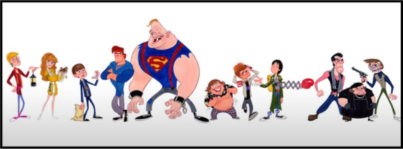

Curiosidades y datos interesantes sobre Los Goonies
La escena que Josh Brolin arruinó
El personaje de Josh Brolin en 'Los Goonies', el adolescente Brand, era bastante insufrible. Y es probable que el actor siguiera metido en el papel cuando arruinó una de las escenas principales de la película.
Richard Donner, director de la cinta, y Steven Spielberg, productor y guionista, habían guardado en el más estricto secreto el barco pirata que aparece al final de 'Los Goonies' porque querían rodar las reacciones auténticas de los chicos.
Por desgracia Josh Brolin, que en ese momento tenía 17 años, le fastidió el momento. "Querían nuestras reacciones genuinas en el set. En aquel entonces no había CGI(computer-generated imagery), así que mantuvieron la nave en secreto para que pudieran grabarnos viéndolo por primera vez. Cuando salimos a la superficie y nos giramos para mirar el barco, grité: '¡Joder!' Spielberg gritó: '¡Corten!'. Lo estropeé todo", cuenta Brolin.
No mojes a Sloth
Durante el rodaje de Los Goonies, Richard Donner las pasó canutas: entre sus estratagemas para mantener a ‘sus’ niños a raya destacan las de ponerles una profesora de informática (por lo visto, acabaron haciendo maravillas con un Apple II, tope de gama para la época) y pagarles las entradas para un concierto de Michael Jackson, a fin de que dejaran de darle el tostón. Pero, si la producción de la película tuvo una víctima, esa fue John Matuszak, el ex jugador de fútbol americano que interpreta a Sloth. Conocido tanto por su buen carácter como por su vida golfa (que acabó llevándole a la muerte en 1989, con 38 años), este deportista llevaba prótesis faciales complicadísimas, y llenas de componentes electrónicos para permitirle guiñar los ojos. Además de necesitar cinco horas para estar a punto, esta caracterización obligaba a mantener a Matuszak seco en todo momento, para que la circuitería no se estropeara. Y, ¿qué pasaba si ocurría esto último? Pues que había que suspender el plan de rodaje y aplazar todas sus escenas para el día siguiente.
La posible serie de dibujos que no acabó siendo
En los 80, prácticamente cualquier película de éxito podía convertirse en serie de dibujos animados, sin importar lo poco apta para menores que fuese. Así las cosas, ¿no resulta un poco raro que Los Goonies no recibiera este tratamiento? Pues el caso es que estuvo a punto de recibirlo, aunque fuera llegados ya los 90 y de la mano de Cartoon Network. La serie hubiera rescatado ideas descartadas para la película, y vistos sus primeros diseños tenía buena pinta. Pero algunos miembros del reparto (cuáles, no lo sabemos) pidieron más dinero del esperado en concepto de derechos de imagen, con lo que el proyecto acabó en la papelera.
Escenas eliminadas
Como es habitual, Los Goonies tuvo varias escenas eliminadas en el montaje final, y, de entre todas ellas, podemos destacar cuatro. La primera, ambientada en una tienda de comestibles, muestra a Josh Brolin defendiendo a su hermanito y sus amigos contra unos matones, y hubiese explicado por qué el mapa del tesoro aparece roto cuando los protas entran en los subterráneos de Willy el Tuerto. La segunda contó con los servicios del adiestrador de bichos Steven Kutcher, y hubiese mostrado al equipo plagado por un montón de sanguijuelas: por lo visto, rodarla costó lo suyo (los animalitos necesitaron un tanque especial de agua caliente), pero al final también se cayó de la versión estrenada. Otra más, que contaba con un pulpo gigante, desapareció porque el animatronic de turno no daba el pego, pero se llevó una mención (a cargo de Data) en la escena final. Y la última nunca llegó a rodarse, pero era la que más prometía: su lugar estaba previsto durante la persecución de coches, y en ella los policías liberaban accidentalmente a dos gorilas llamados Bonzo el Grande y Señora.